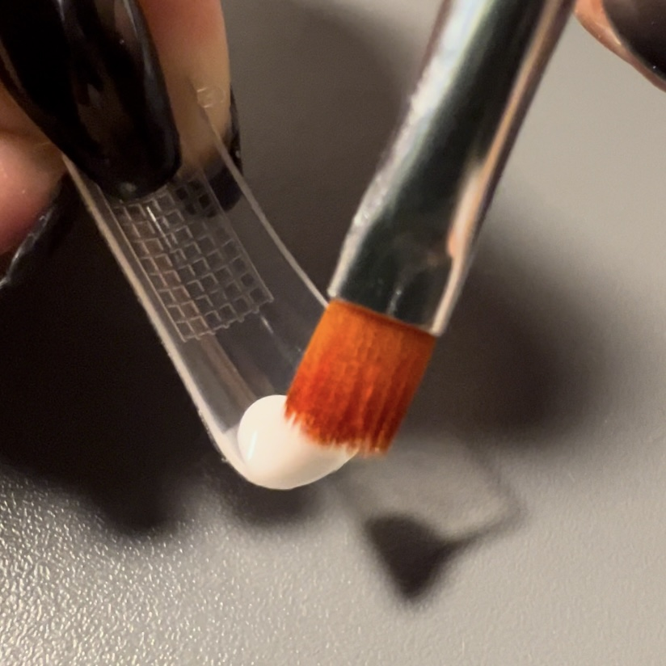

Step 1

손톱 크기에 맞는 연장용 네일팁을 찾는다.
→
Step 2
네일팁에 폴리젤을 덜어낸다.
→
Step 3
슬립 솔루션을 묻힌 브러쉬로 폴리젤을 고르게 분포한다.
→
Step 4
젤램프에 60초간 굽는다.
→
Step 5
연장용 네일팁을 제거하고 네일 파일을 이용해 원하는 길이와 모양으로 다듬는다.
→
Step 6
젤클리너로 미경화젤을 닦아낸다.
→
Step 7
원한다면 원하는 색의 컬러젤을 도포 후 젤램프에 60초 간 굽고 미경화젤을 닦아낸다.
→
Step 8
탑젤을 발라 젤램프에 60초 간 굽고 미경화젤을 닦아 마무리한다.
(상황에 따라 젤이 굳지 않았다면 30초씩 추가로 구워준다.)